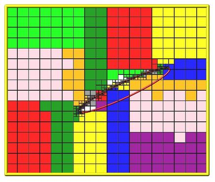

fix balance command
fix balance/kk command
Syntax:
fix ID balance Nfreq thresh bstyle args
ID is documented in fix command
balance = style name of this fix command
Nfreq = perform dynamic load balancing every this many steps
thresh = rebalance if imbalance factor is above this threshhold
bstyle = random or proc or rcb
random args = none proc args = none rcb args = weight weight = cell or part or time
zero or more keyword/value(s) pairs may be appended
keyword = axes or flip
axes value = dims dims = string with any of "x", "y", or "z" characters in it flip value = yes or no
Examples:
fix 1 balance 1000 1.1 rcb cell
fix 2 balance 10000 1.0 random
Description:
This command dynamically adjusts the assignment of grid cells and their particles to processors as a simulation runs, to attempt to balance the computational cost (load) evenly across processors. The load balancing is "dynamic" in the sense that rebalancing is performed periodically during the simulation. To perform "static" balancing, before or between runs, see the balance_grid command.
This command is useful to use during simulations where the spatial distribution of particles varies with time, leading to load imbalance.
After grid cells have been assigned, they are migrated to new owning processors, along with any particles they own or other per-cell attributes stored by fixes. The internal data structures within SPARTA for grid cells and particles are re-initialized with the new decomposition.
The details of how child cells are assigned to processors by the various options of this command are described below. The cells assigned to each processor will either be "clumped" or "dispersed".
The rcb keyword will produce clumped assignments of child cells to each processor. This means each processor's cells will be geometrically compact. The random and proc keywords will produce dispersed assignments of child cells to each processor.
IMPORTANT NOTE: See Section 6.8 of the manual for an explanation of clumped and dispersed grid cell assignments and their relative performance trade-offs.
Rebalancing is attempted by this command once every Nfreq timesteps, but only if the current imbalance factor exceeds the specified thresh. This factor is defined as the maximum number of particles owned by any processor, divided by the average number of particles per processor. Thus an imbalance factor of 1.0 is perfect balance. For 10000 particles running on 10 processors, if the most heavily loaded processor has 1200 particles, then the factor is 1.2, meaning there is a 20% imbalance. The thresh setting must be >= 1.0.
IMPORTANT NOTE: This command attempts to minimize the imbalance factor, as defined above. But computational cost is not strictly proportional to particle count, depending on the collision and chemistry models being used. Also, changing the assignment of grid cells and particles to processors may lead to additional communication overheads, e.g. when migrating particles between processors. Thus you should benchmark the run times of your simulation to judge how often balancing should be performed, and how aggressively to set the thresh value.
The random keyword means that each grid cell will be assigned randomly to one of the processors. In this case every processor will typically not be assigned exactly the same number of grid cells.
The proc keyword means that each processor will choose a random processor to assign its first grid cell to. It will then loop over its grid cells and assign each to consecutive processors, wrapping around the collection of processors if necessary. In this case every processor will typically not be assigned exactly the same number of grid cells.
The rcb keyword uses a recurvise coordinate bisectioning (RCB) algorithm to assign spatially-compact clumps of grid cells to processors. Each grid cell has a "weight" in this algorithm so that each processor is assigned an equal total weight of grid cells, as nearly as possible.
If the weight argument is specified as cell, then the weight for each grid cell is 1.0, so that each processor will end up with an equal number of grid cells.
If the weight argument is specified as part, than the weight for each grid cell is the number of particles it currently owns, so that each processor will end up with an equal number of particles.
If the weight argument is specified as time, then timers are used to estimate the cost of each grid cell. The cost from the timers is given on a per processor basis, and then assigned to grid cells by weighting by the relative number of particles in the grid cells. If no timing data has yet been collected at the point in a script where this command is issued, a cell style weight will be used instead of time. A small warmup run (for example 100 timesteps) can be used before the balance command so that timer data is available. The number of timesteps Nfreq between balancing steps also needs to be large enough to give reliable timings. The timers used for balancing tally time from the move, sort, collide, and modify portions of each timestep.
IMPORTANT NOTE: The adapt_grid command zeros out timing data, so the weight time option is not available immediatly after this command.
IMPORTANT NOTE: The coarsening option in fix_adapt may shift cells to different processors, which makes the accumulated timing data for the weight time option less accurate when load balancing is performed immediately after this command.
Here is an example of an RCB partitioning for 24 processors, of a 2d hierarchical grid with 5 levels, refined around a tilted ellipsoidal surface object (outlined in pink). This is for a weight cell setting, yielding an equal number of grid cells per processor. Each processor is assigned a different color of grid cells. (Note that less colors than processors were used, so the disjoint yellow cells actually belong to three different processors). This is an example of a clumped distribution where each processor's assigned cells can be compactly bounded by a rectangle. Click for a larger version of the image.


The optional keywords axes and flip only apply to the rcb style. Otherwise they are ignored.
The axes keyword allows limiting the partitioning created by the RCB algorithm to a subset of dimensions. The default is to allow cuts in all dimension, e.g. x,y,z for 3d simulations. The dims value is a string with 1, 2, or 3 characters. The characters must be one of "x", "y", or "z". They can be in any order and must be unique. For example, in 3d, a dims = xz would only partition the 3d grid only in the x and z dimensions.
The flip keyword is useful for debugging. If it is set to yes then each time an RCB partitioning is done, the coordinates of grid cells will (internally only) undergo a sign flip to insure that the new owner of each grid cell is a different processor than the previous owner, at least when more than a few processors are used. This will insure all particle and grid data moves to new processors, fully exercising the rebalancing code.
Restart, output info:
No information about this fix is written to binary restart files.
This fix computes a global scalar which is the imbalance factor after the most recent rebalance. It also computes a global vector of length 3 with additional information about the most recent rebalancing and the cummulative count of rebalancings. The 3 values in the vector are as follows:
1 = max particle count on any processor after last rebalance
2 = imbalance factor before the last rebalance was performed
3 = cummulative count of rebalances since the fix was specified
As explained above, the imbalance factor is the ratio of the maximum number of particles on any processor to the average number of particles per processor. For the rcb style's time option, the imbalance factor after the most recent rebalance cannot be computed and 0.0 is returned for the global scalar value.
Styles with a kk suffix are functionally the same as the corresponding style without the suffix. They have been optimized to run faster, depending on your available hardware, as discussed in the Accelerating SPARTA section of the manual. The accelerated styles take the same arguments and should produce the same results, except for different random number, round-off and precision issues.
These accelerated styles are part of the KOKKOS package. They are only enabled if SPARTA was built with that package. See the Making SPARTA section for more info.
You can specify the accelerated styles explicitly in your input script by including their suffix, or you can use the -suffix command-line switch when you invoke SPARTA, or you can use the suffix command in your input script.
See the Accelerating SPARTA section of the manual for more instructions on how to use the accelerated styles effectively.
Restrictions: none
Related commands:
Default: none